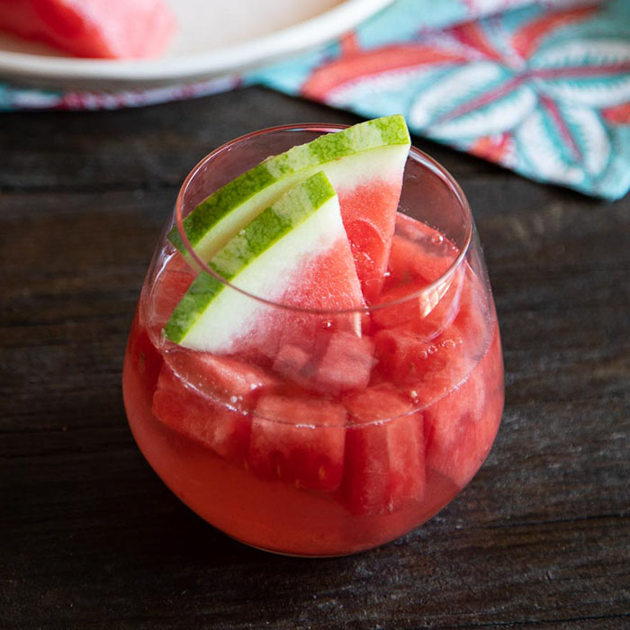

Watermelon sangira recipe!

This watermelon sangria is one of my favorite summer recipes.
If you love watermelon and white wine, you'll love this fruity drink on a hot day!
Ingridients:
- 12 cups cubed watermelon, divided
- 1 (750 milliliter) bottle dry white wine
- 1 cup vodka
- ½ cup triple sec
- ½ cup simple syrup
- 1 orange, cut into wedges
- 1 cup fresh blueberries
- 1 medium lime, quartered
Steps:
- Place 9 cups of watermelon cubes in a blender; blend on high until very smooth.
- Strain juice through a mesh strainer into a large pitcher.
- Pour wine, vodka, triple sec, and simple syrup into the pitcher; stir to combine.
- Add remaining 3 cups of watermelon cubes, orange sections, blueberries, and lime quarters
- chill sangria for 4 hours before serving.